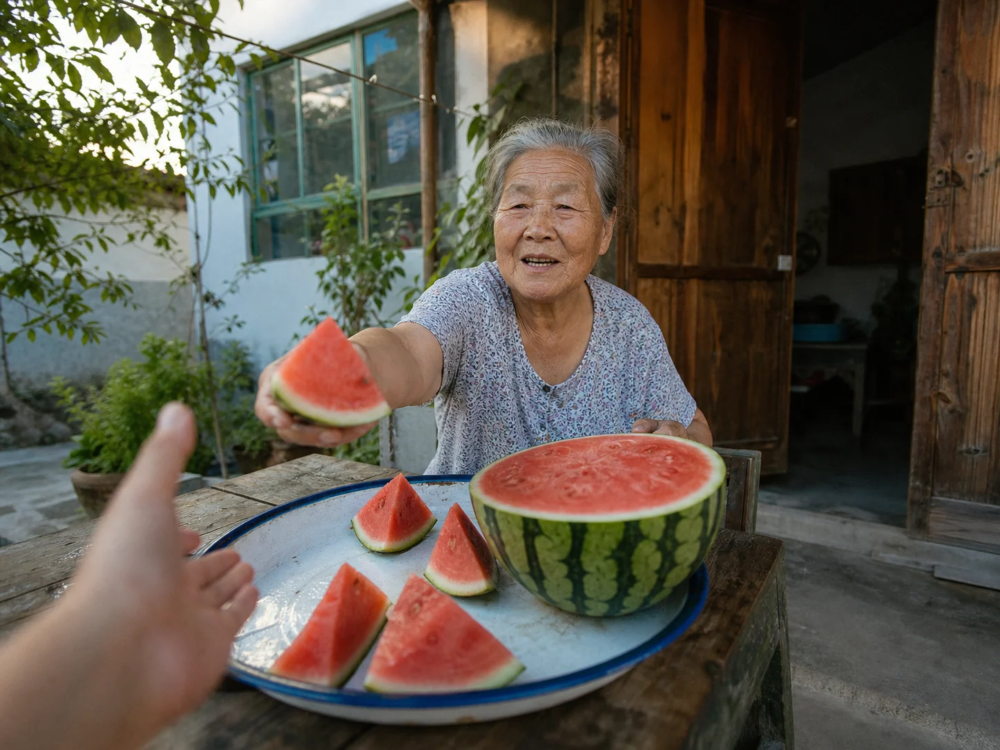

Biting Autumn: Watermelon on the First Autumn Evening
On the first autumn evening, my grandmother waited until everyone returned before cutting the watermelon she had saved beneath a damp cloth.

A watermelon kept uncut
The watermelon waited beneath a damp cloth on the first day of autumn. I passed it several times after lunch, when the courtyard stones were still hot and the open doorway held no breeze. A dark circle of moisture spread slowly beneath it on the wooden board. My grandmother told me not to lift the cloth until everyone had returned.
She called the evening custom biting autumn. In our house, it meant one watermelon saved for that date, not a table of special dishes. She set a wide enamel tray beside the knife and listened for the last bicycle at the gate.
The first slice at dusk
When the family was together, my grandmother wiped the rind and cut through the center. The crack reached the table before the red halves opened. Black seeds shone near the middle where the knife had passed. She divided one half into wedges, placed them around the tray, and handed the first piece across to me.
Sour-plum drink marked the long Beijing summer through a jar that was opened again and again, while the watermelon marked one evening with a single cut. Winter-melon tea began with a preserved slab on an autumn counter; our first-autumn watermelon remained fresh, wet, and unmistakably part of the heat still outside.
Summer beside the open door
The calendar had changed, but the courtyard had not cooled. Shirts still clung at the shoulder, cicadas continued beyond the wall, and condensation ran from the rind onto the enamel. The damp cloth hung from a chair and did not dry before dark. My grandfather carried his wedge to the doorway because the room was warmer than the step.
After the last piece was taken, my grandmother covered the remaining half with an upturned bowl. She turned the enamel tray once, slid the smaller wedges away from the pooled juice, and carried it through the open door.